Weiter mit: „Charakter-Symbole als eigene Icons statt Material“ · „Grad-Marker erst ab Zoom 13, weiter draußen nur Linie“ · „Theme-Umschalter im Profil zeigen“
offline_tool_rail.dart: Leiste links mittig mit Filter · Ausschnitt · Fläche + · Fläche − · Entlang Trails · Rückgängig · Meine Bereiche · Speichern (+/− Zähler) · Schließen. map_screen.dart: Knopfspalte jetzt bottomRight, Maßstab/Quelle unten links. Issue #39: Launcher-Icon für Play Store 1.0.0 — das Logo aus Turn 1 wird gebraucht.Weiter mit: „3b hell (Protomaps light)“ · „Speichern-Dialog aus 0.27.0 (Name, Orte, Fortschritt) im neuen Look“ · „Launcher-Icon für #39 in allen Größen aus 1b“
area_overlay.dart / area_draw.dart: Abdunkelung 0x66000000 mit gespeicherten Kacheln als Löchern; Entwurf grün 0x5530A46C darüber, auch auf hellen Kacheln; Radierer wirkt nur auf draft.keys. Die Zahl zählt draft.shape.countTiles — also auch schon Gespeichertes._rowRuns) sind billig zu erzeugen und laufen durch dieselbe MapViewPolyline-Fassade auf beiden Engines — kein Stil-Bild nötig. Abstand in Bildschirm-Pixeln festlegen (z. B. 7 px bei aktuellem Zoom), sonst wird die Schraffur beim Zoomen zu Streifen. Gestrichelter Rand: dash gibt es an der Polyline schon (Ausgangskorb).Weiter mit: „2b auch hell (Protomaps light)“ · „Laufender Strich des Radierers auf Gespeichertem zeigen“ · „2c mit Fehlerfall: kein Netz fürs Laden“
#1F6F5F, Standard-Flutter-Icon als App-Logo, Login mit Icons.pedal_bike. Karten-Semantik heute: Grün mein Trail · Blau Buddy · Orange Warnung · Gelb neuer Hinweis · Violett offiziell · Magenta Kandidat · Graphit Fahrt.
▲ ▮▮▮ 78%Weiter mit: „1b als Hauptlogo, App-Icon in allen Größen“ · „1h auch hell zeigen“ · „Trail-Liste 1j mit Karte-Vorschau je Zeile“